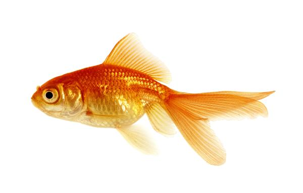

PEZ DORADO

Los peces en general constituyen una de las mejores opciones para que los niños tengan sus primeras mascotas. Con ellos aprenderán a cuidar y disfrutar de la compañía de otro ser vivo, así como también a tomar en serio la responsabilidad que implica tener una mascota.
El pez dorado, perteneciente a la familia Cyprinidae, es también conocido como carpín dorado, y se trata de uno de los peces más populares en los acuarios de todo el mundo. No en vano es una de las especies más capturadas para pasar el resto de su vida en cautiverio.
El origen de este pez se remonta a China, donde no solo fueron criados para el consumo humano, sino también para ser domesticados. Debido a sus colores fascinantes y atractivos, en la actualidad son integrantes de muchos acuarios. El dorado (Brachyplatystoma rousseauxii) es un pez migratorio que habita en la Amazonía y realiza la migración en agua dulce más extensa del mundo.
- El tamaño del pez dorado puede variar considerablemente de un ejemplar a otro. En este aspecto, algunos pueden llegar a medir 10, 60 o hasta 90 centímetros de longitud.
- La expectativa de vida de los peces dorados es bastante alta; pueden llegar a vivir entre 15 y 40 años aproximadamente.
- El peso es otro de los aspectos que varía considerablemente de acuerdo a la especie. En estos casos, el pez dorado más pequeño pesa alrededor de 0,3 kilos y el más grande 30.
- Es tranquilo y convive muy bien con otras especies.
- e alimenta de algas marinas, larvas, plancton, lombrices e inclusive pequeños huevos de otras especies.
MENU